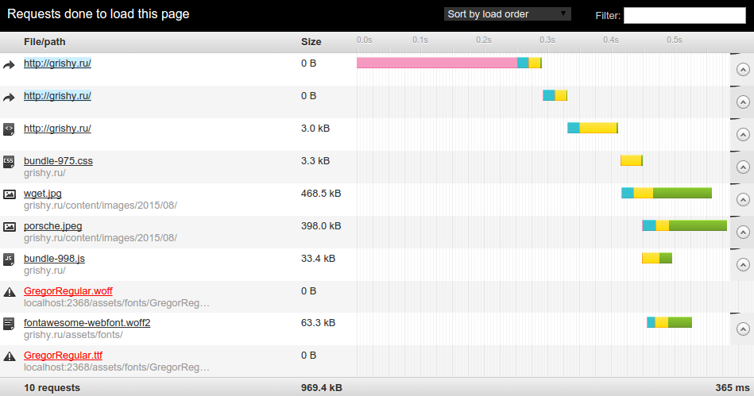
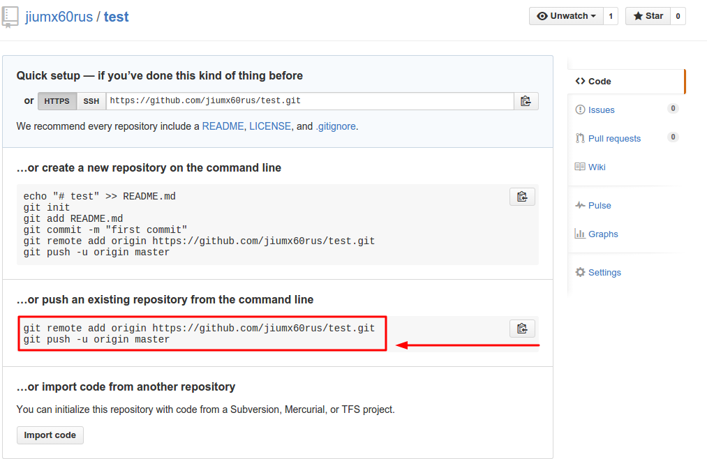
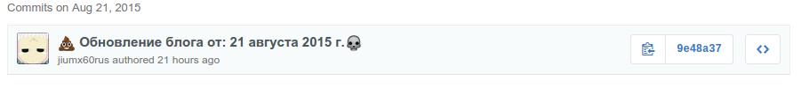

Генерация статического сайта из любого сайта
Сейчас рассмотрим как сделать статическую(локальную) копию сайта, если у него нет такой функции в CMS и загружать его на GitHub Pages. К слову, если нужен простой сайт, то можно попробовать использовать встроенный в GitHub Jekyll и если у вас блог и вам понравилась идея Jekyll, попробуйте Octopress. Я так собираю этот блог на работающий на Ghost.
Легче всего генерировать просто скачав все файлы, которые использует блог для отображения страниц. Грубо говоря зайдя на все страницы сайта и нажать Ctrl+S. Пользоваться мы будет стандартной в Linux консольной программой wget и делается все это одной простой командой. Для Ghost можно пользоваться buster.
Что такое wget?
Wget — свободная неинтерактивная консольная программа для загрузки файлов по сети. Поддерживает протоколы HTTP, FTP и HTTPS, а также поддерживает работу через HTTP прокси-сервер. Программа включена почти во все дистрибутивы GNU/Linux. Wikipedia
Wget очень удобное приложение командной строки для скачивания файлов через различные протоколы, а именно HTTP. С помощью нескольких дополнительных параметров, Wget превращается в веб-архиватора. Можно рекурсивно пройти по сайту и создать его локальную, автономную копию на своём компьютере.
Для Windows она тоже есть, но сам я её там не проверял.
Как мы будем использовать wget
Будем проходить по всему нашему сайту скачивая то, что отдает нам сервер и загружая все файлы которые нужны для нормально отображения страницы (изображения, скрипты , стили и т.п.) в папку на компьютере.
Вот что у меня будет скачено для главной страницы: 
Приступаем
- Запускаем свой сайт у себя.
- Используем wget, чтобы получить копию.
wget -r -k -E -nH -Pstatic --restrict-file-name=unix http://localhost:2368/ - Загрузить то, что получили на предыдущем шаге на хостинг.
Запускаем свой сайт у себя.
Я захожу в папку с Ghost и npm start. Если у вас Wordpress, то можно скачать с Bitnami установщик и т.п.
jiumx@jiumx-All-Series:~/src/ghost$ npm start
> ghost@0.6.4 start /home/jiumx/src/ghost
> node index
Migrations: Up to date at version 003
Ghost is running in development...
Listening on 127.0.0.1:2368
Url configured as: http://localhost:2368
Ctrl+C to shut down
Как видите, он запустился на localhost:2368 и если мы откроем в браузере эту ссылку, то там должен быть наш блог. Он доступен только с нашего компьютера и каждая страница генерируется по запросу от пользователя.
Используем wget, чтобы получить копию.
И так приступим к разбору этой большой и сложной команды в пункте 2 :)
wget- программа, которую мы хотим запустить.-r- рекурсивно проходить по ссылкам на страницах. Например программа заходит на главную страницу скачивает её и видит ссылку на первый пост, переходит к посту, там тоже ссылки на другие страницы и все повторяется. Таким образом она пройдёт по всему сайту, который доступен пользователю.-k- превратить абсолютные ссылки в документе в относительные ссылки. То естьgrishy.ru/post-simpleбудет переделан вpost-simple. Это нужно для того, чтобы сгенерированная копия не зависела от имени сайта и работала в любой папке.-E- добавлять расширение.htmlзагруженным страницам. Нужно для локального просмотра.-nH- Отключает создание хост-каталога. По умолчания запуск wget создаст структуру каталогов, начиная с localhost:2368.-Pstatic- Определяет в какую папку загружать сайт. В данном случае выбрана папка static. Иначе все файлы просто вывалятся в директорию, откуда была запущена программа.--restrict-file-name=unix- Определяет набор символов, разрешённых в URL. По умолчанию wget экранирует символы, которые не могут быть частью имени файла в вашей операционной системе, а также управляющие символы, как правило непечатные. Иначе у могут появится весёлые названия типа/\321%81ка\321%87а\321%82\321%8Chttp://localhost:2368/- URL на сайт для копирования. Можно указать URL не только на своём компьютере, а например небольшой сайт для проверки :)
Так как мы работаем в пределах своего компа, то копия создается очень быстро. Насколько?
ЗАВЕРШЕНО --2015-08-21 00:16:50--
Общее время: 1,0s
Загружено: 33 файлов, 5,1M за 0,7s (7,24 MB/s)
После запуска и выполнения программы у нас будет аккуратная папочка static с сайтом.
jiumx@jiumx-All-Series:~/src/blog$ tree . -d
.
└── statis
├── about
├── assets
│ ├── css
│ ├── fonts
│ ├── images
│ └── js
├── content
│ └── images
│ └── 2015
│ └── 08
├── gienieratsiia-statichieskogho-saita-liubogho-saita
├── pochiemu-ghost
├── projects
├── rss
└── tag
├── ghost-tag
├── git
├── node-js
├── optimizatsiia
├── wget
└── wordpress
22 directories
Загружаем на GitHub
И осталось только показать наш блог всем. Я перед этим ещё его оптимизирую, но это не обязательно :). Регистрируемся на GitHub и заходим GitHub Pages. Выполняем первый пункт т.е. создайте репозиторий c именем username.github.io, где username это ник на GitHub. После создания репозитория откроется что-то похожее на 
В папке statis выполняем команды(Кратко о git, чтобы понимать что к чему)
git init- создания репозиторияgit add .- выбрать все файлы для отправки на githubgit commit -m "Обновление блога"- создаем коммит с записью Обновление блога. Можно использовать любое описание. У меня например с датой его оправления ↓ - А теперь надо ввести те те две команды которые я обвёл на скриншоте выше (красным). Первая укажет куда отправлять, а вторая отправит его.
Если все прошло без ошибок, то переходим на username.github.io и наслаждается сайтом. К слову обновление происходит не мгновенно. А в репозитории теперь есть история вашего сайта и и при желании можно откатиться на неделю назад, если что-то не понравилось или посмотреть как он развивался.